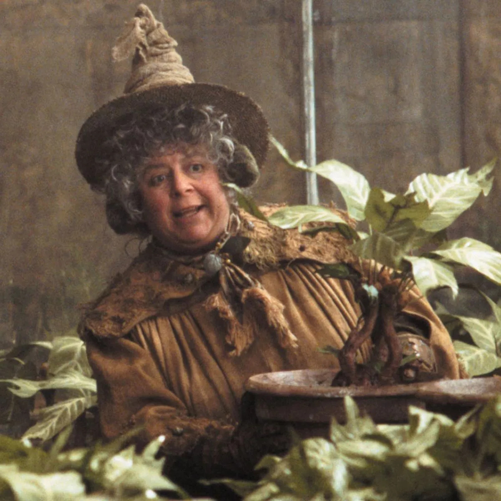

| Фотографии персонажей |
Имена персонажей |
Интересные факты |
 |
Седрик Диггори |
Седрик Диггори
— один из главных героев четвёртой части. На три года и два курса старше Гарри Поттера. Седрик Диггори описан как «сильный, но тихий тип», «ужасно привлекательный», честный и смелый.
Был капитаном и ловцом команды Пуффендуя по квиддичу, старостой факультета и вообще — отличным студентом. |
 |
Нимфадора Тонкс |
Нимфадора Тонкс
— сотрудница Министерства Магии, мракоборец, член второго состава Ордена Феникса, обладает способностями метаморфа, то есть может с лёгкостью магическим образом изменять свою внешность,
не прибегая к заклинаниям или зельям. Жена Римуса Люпина, мать Тедди. |
|
Ньют Саламандер |
Ньют Саламандер
— английский волшебник , известный Магозоолог и автор "Фантастических зверей и мест их обитания". Будучи в Хогвартсе, он был приговорен к исключению, хотя Альбус Дамблдор, который был его преподавателем защиты от темных искусств,
признал его невиновность и решительно возражал. Он был сильно вовлечен в Магическую войну, где бросил вызов Геллерту Грин-де-Вальду в трех различных случаях. |
|  |
Помона Стебль |
Помона Стебль
— преподаватель травологии в Школе чародейства и волшебства Хогвартс, декан факультета Пуффендуй. Была защитником философского камня. Её задание в первой комнате — Дьявольские силки. |